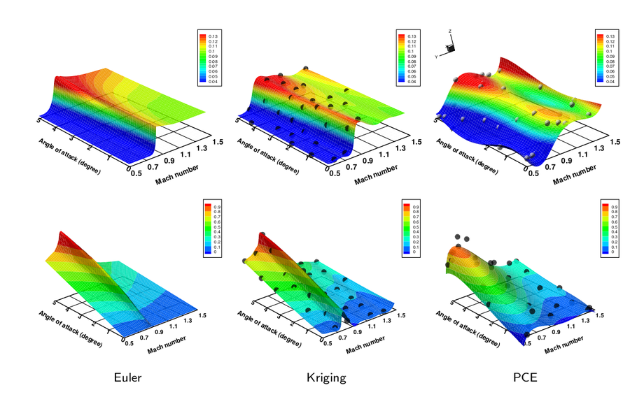
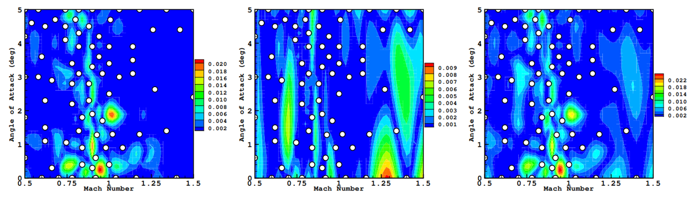
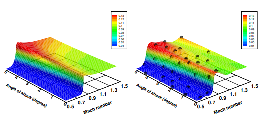

← Publications Thesis 2014
Uncertainty Quantification and Optimization Under Uncertainty Using Surrogate Models
Masters Thesis; Department of Mechanical and Aerospace Engineering, University of Dayton, Dayton, Ohio, 2014
Date of Presentation: July 17, 2020
Report
Summary
Surrogate models are widely used as approximations to exact functions that are computationally expensive to evaluate. The choice of model training information and the estimation of the accuracy of surrogate models are major research avenues. In this work, a unified dynamic framework for surrogate model training point selection and error estimation is proposed. Building auxiliary local surrogate models over sub-domains of the global surrogate model forms the basis of the framework. A discrepancy function, defined as the absolute difference between response predictions from global and local surrogate models for randomly chosen test candidates, drives the framework.
The framework preferably evaluates the expensive exact function at locations, where the value of the discrepancy function is high and when a distance-constraint to previously existing training points are satisfied. As a result, the surrogate model is continually refined in regions of higher uncertainty in prediction, and a better spread of training points is also achieved. Unlike most training point selection approaches, the framework addresses surrogate training from two disparate contexts, as training in the presence and absence of derivative information. The local surrogate models use the derivative information when available and affect the framework via the discrepancy function, and helps determine the locations that require derivative information. The benefits of the dynamic training approach are demonstrated with analytical test functions and the construction of a two-dimensional aerodynamic database. The results show that the proposed method improves the convergence monotonicity and produces more accurate surrogate models, when compared to random and quasi-random training point selection strategies.

Figure:The local surrogate model has orders of magnitude higher errors (left) in aerodynamic drag prediction than the main surrogate model error (middle), yet the difference between the two (right) effectively guides the training point selection process by systematically placing training points from the transonic regime of physics with higher nonlinearity in the parameter space.

The newly introduced discrepancy function is proposed as an approximation to the actual error in the prediction of the surrogate model leading to the quantities: root mean square discrepancy (RMSD) and maximum absolute discrepancy (MAD). The results demonstrate a close agreement of RMSD and MAE with the actual root mean square error (RMSE) and maximum absolute error (MAE), respectively. Therefore, RMSD and MAD are proposed as measures for the accuracy of the surrogate models in applications of practical interest. The benefit of surrogate validation comes without warranting any additional exact function evaluations, which makes the framework computationally viable.
Multivariate interpolation and regression model is employed to build local surrogates, whereas the kriging and polynomial chaos expansions serve as global surrogate models. This demonstrates the applicability of the proposed framework to any surrogate model with an open choice of training data selection.
Finally, the dynamically trained surrogate models are applied to uncertainty quantifications and optimizations under mixed epistemic and aleatory uncertainties (OUU), for structural and aerodynamic test cases. In the OUUs epistemic uncertainties are propagated via box-constrained optimizations, whereas the aleatory uncertainties are propagated via inexpensive sampling of the surrogate models. The structural test cases include designing a three-bar truss and a cantilever beam, whereas the aerodynamic test case involves the robust optimization (lift-constrained drag minimization) of an airfoil under steady flow conditions.